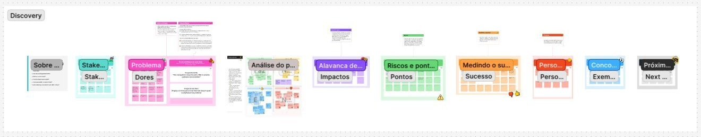
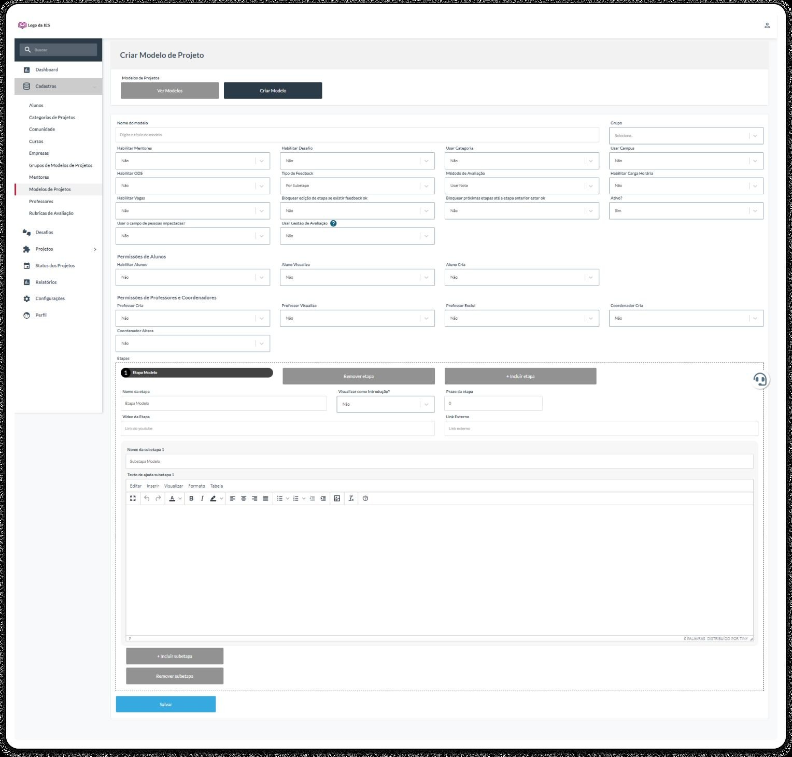
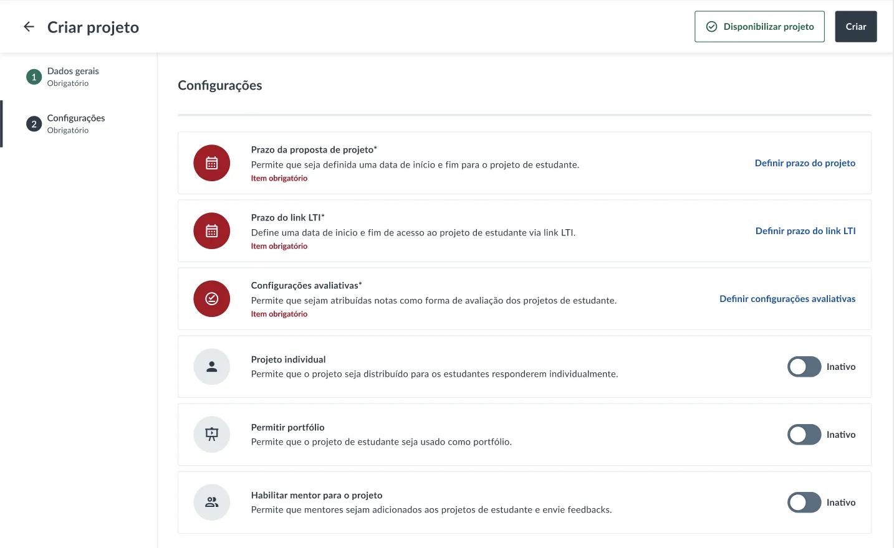
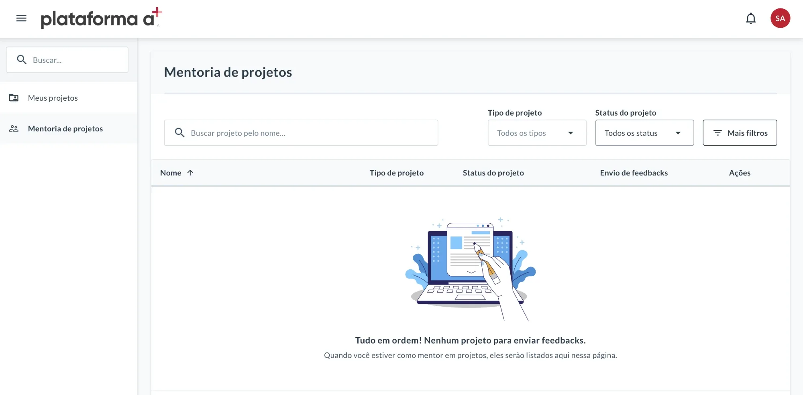
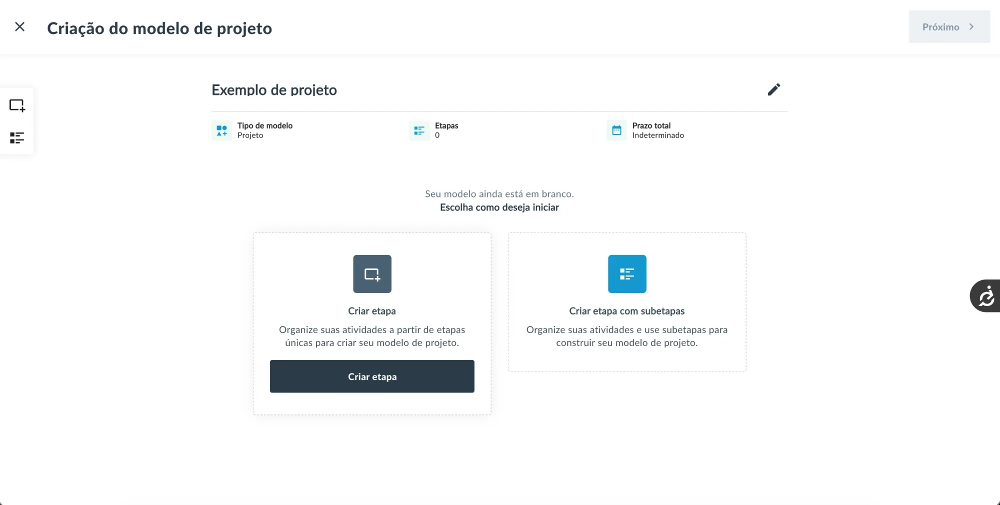
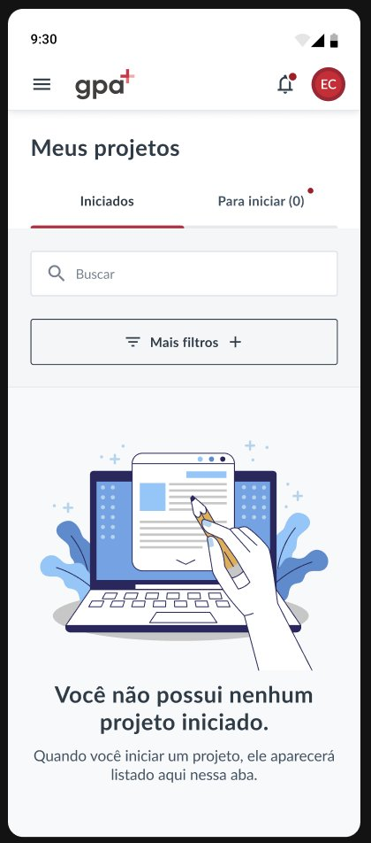
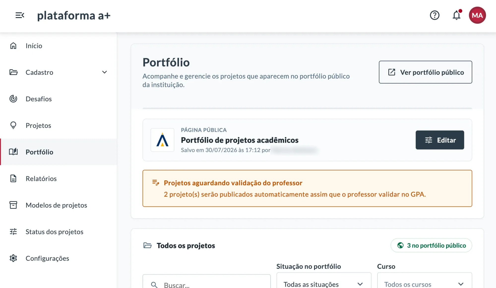
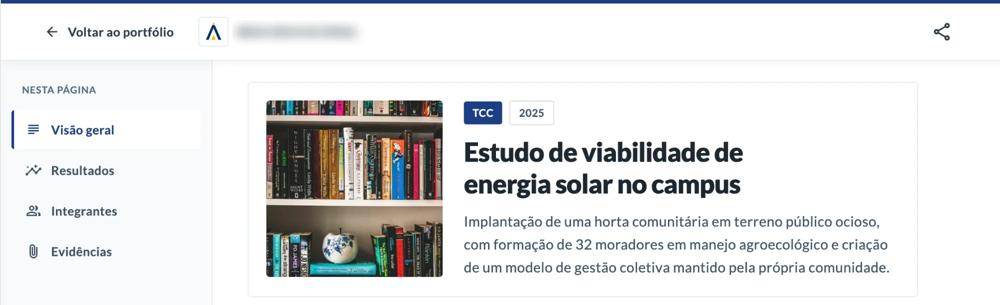
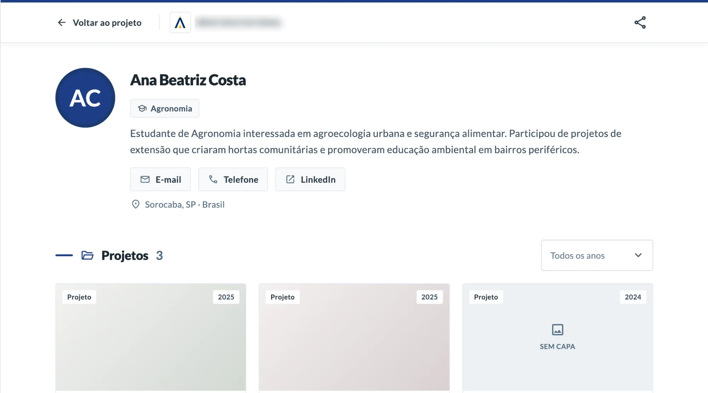

The error had no address
The professor couldn't pinpoint the error inside a generic feedback field.
The research showed where the new experience still broke in real use, and changed the product's priority.

TL;DR
GPA was a legacy academic platform that worked for some profiles and broke for others. I ran heuristic, generative and pilot research before designing, rebuilt navigation, feedback and interface states, and used pilot evidence to move mobile up the roadmap.
The hardest part wasn't the research. It was doing research inside a project that wanted to launch at any cost: a complex product, a team that changed its mind many times, and studies left for later. When the pilot finally came, I used it to bring evidence back into the roadmap.
59
students across two classes in the production pilot
0
support tickets identified during the pilot, per the pilot lead's account
55
students surveyed, cross-checked with 3 interviews
Context
GPA was a legacy platform: stable enough to run, but built around the system's structure, not the people using it. Student, professor and coordinator depend on the same system for opposite things, and the same screen could feel great to one and unworkable to another.
Conflict
GPA was complex, and the team was still working out what it wanted: priorities changed often, the pressure was to launch at any cost, and research was left for later. When the pilot came, it looked like a success: the desktop experience was clear, and students said they'd use it again. But the focus group pointed, unprompted, to mobile, and the roadmap was already set.
Goal
Rebuild the experience from how each profile actually works, not how the system was assembled, with decisions grounded in behavior rather than intuition.
Method, from broad to real

Key findings
The professor couldn't pinpoint the error inside a generic feedback field.
Without context in the product, correction spilled into WhatsApp and in-person meetings.
A locked screen, cut-off content, and having to rotate the phone to read.
In a group with almost no computers, one classmate centralized the typing and the rest participated less.


Before
One interface for everyone, forcing people to memorize paths.
After
Each profile accesses its own context, and the system anticipates priority tasks.

Before
Generic correction with no context.
After
A structured flow with clear states: Pending, In review, Returned.
Before
No action feedback, no inline errors, no confirmation.
After
A full set of states: guided empty states, inline errors, success confirmations.

What I chose
I brought the finding to the technical and business teams for what it was: a participation barrier, not a secondary tweak.
How it was decided
No alternative was put on the table. The evidence was enough: the team accepted the recommendation and mobile was prioritized on the roadmap at that moment.
What I gave up
A demand for the portfolio and a dashboard was pushed back so mobile could move up. It was a real trade-off: the evidence for mobile had to outweigh work that was already on the table. The portfolio was delivered later, and the dashboard is next.
Evidence
The focus group raised mobile unprompted. In one group almost nobody had a computer, while the professor, on desktop, reported no issues: the same platform was a barrier in one context and not in another.
Improved
Mobile moved up the roadmap as a participation issue, and today it is resolved.

What the data shows
33%
of sessions come from mobile over the year
48%
from mobile in the busiest class months
26% / 31%
of sessions with frustration signals, mobile against desktop
At the institution with the most sessions, mobile gets more than half of the views on the entry page and the students' project area; at the others, between about 20% and 40%. The pages where professors build and manage, like templates and classes, stay on desktop.
What came next
I stayed on GPA. The portfolio that was pushed back for mobile is the one I designed and delivered in 2026, and the dashboard is next. I'm also designing how external companies and communities can sign up and submit challenges without the institution losing control.



What I'd do differently
I'd have measured mobile participation before the change, so I could compare the same thing afterward. I don't have a baseline from before, so today the data shows use, not the effect of the change.
“It worked” isn't the same as “it's solved.”
A pilot can be a success and, at the same time, reveal serious problems. It's exactly there, in the distance between the two, that research earns the right to touch the roadmap.
The same goes for mobile. It is used, but in sessions with a form submission or upload it still trails desktop (about 2.5% against 5.6%). Students deliver their work inside GPA, but that count also includes the forms professors fill in to create projects and classes, and I can't separate the two. So I can't yet say whether mobile limits delivery or only reflects who uses each screen.
+A Educação. Some numbers and internal details have been generalized for external use.
Next case

From an off-target first version to a pilot in two institutions, in six weeks.
View case study